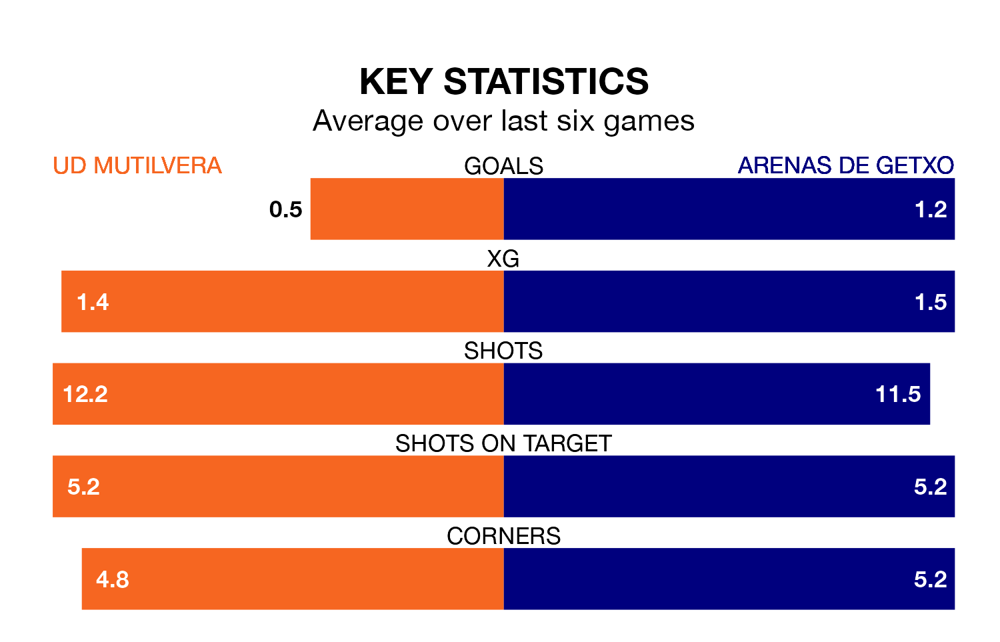

UD Mutilvera welcome Arenas de Getxo to the Estadio Municipal Valle de Aranguren on early Sunday looking to pick up points to end their four-game losing streak.
Mutilvera's struggles have left them with just three points from their last six Segunda División RFEF Group 2 matches, while their opponents have earned eight from a possible 18.
Mutilvera are 14th in the table after 32 games, of which they have won nine and drawn six, earning 33 points.
Arenas de Getxo are two places ahead of the hosts in 12th, with eight wins and 13 draws putting them on 37 points.
With 20 goals in 32 games so far this season, Mutilvera are the league's joint-third-lowest scorers with 0.6 goals per game. And they are conceding more than average, letting in 43 goals at a rate of 1.3 per game.
The away side are also below average scorers, with 0.9 goals per game, compared to a league average of 1.1. They have conceded 1.1 goals per game.
In the last five years, Mutilvera and Arenas de Getxo have played each other on five occasions. Mutilvera won two of them and they drew three times.
On average, Mutilvera scored 0.8 goals and Arenas de Getxo 0.2 in those matches.
Their last meeting was on December 16, when they played out a 0-0 draw.
Mutilvera's last match was on April 20, a 3-0 loss against AD San Juan.
Arenas de Getxo drew 2-2 with Real Zaragoza B last time out, on April 21.
Updated: 07:59 (UTC), 26/04/24